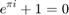

% This programm reads ECG data which are saved in format 212. % and Respiratory data which are saved in format 16 (apnea-ecg database) % The annotations are saved in the vector ANNOT, the corresponding % times (in seconds) are saved in the vector ATRTIME. % The annotations are saved as numbers, the meaning of the numbers can % be found in the codetable "ecgcodes.h" available at www.physionet.org. % % % created on 2015 by % Santiago Arevalo (National University of Entre Rios) % (email: sarevalog@correo.udistrital.edu.co), % % algorithm is based on a program written by % Klaus Rheinberger (University of Innsbruck) % (email: klaus.rheinberger@uibk.ac.at) % % ------------------------------------------------------------------------- clc; clear all; PATH= '/home/sarevalog/Dropbox/MAESTRIA/THESIS/CODIGOS/MATLAB/RESPIRATORY'; %Lee la señal ECG de un archivo y las señales respiratorias de otro sig='a01'; HEADERFILE= [sig 'er' '.hea']; % header-file in text format DATAFILEECG=[sig '.dat']; % data-file DATAFILERES=[sig 'r' '.dat']; % data-file ATRFILE = [sig 'r' '.apn']; % apnea annotations SAMPLES2READ = 50; % ------ LOAD HEADER DATA -------------------------------------------------- fprintf(1,'\\n$> WORKING ON %s ...\n', HEADERFILE); signalh= fullfile(PATH, HEADERFILE); fid1=fopen(signalh,'r'); z= fgetl(fid1); A= sscanf(z, '%*s %d %d %d',[1,3]); nosig= A(1); % number of signals sfreq=A(2); % sample rate of data samples = A(3); clear A; for k=1:nosig z= fgetl(fid1); A= sscanf(z, '%*s %d %d %d %d %d %d %d %*s',[1,5]); dformat(k)= A(1); % format; gain(k)= A(2); % number of integers per mV bitres(k)= A(3); % bitresolution zerovalue(k)= A(4); % integer value of ECG zero point firstvalue(k)= A(5); % first integer value of signal (to test for errors) end; fclose(fid1); clear A fid1; % %------ LOAD BINARY DATA -------------------------------------------------- %------- %-------ECG %------- signalECG= fullfile(PATH, DATAFILEECG); % data in format 212 fid2=fopen(signalECG,'r'); %'r' open file for reading A= fread(fid2, [2,inf], 'uint8')'; % matrix with 3 rows, each 8 bits long, = 2*12bit fclose(fid2); M1HA= bitand(A(:,2), 15); PRLA=bitshift(bitand(A(:,2),8),9); % sign-bit ECG( : , 1)= bitshift(M1HA,8)+ A(:,1)-PRLA; if ECG(1,1) ~= firstvalue, error('inconsistency in the first bit values'); end; clear M1HA PRLA A; %------- %-------RES %------- signalRES= fullfile(PATH, DATAFILERES); % data in format 16 fid3=fopen(signalRES,'r'); %'r' open file for reading B = fread(fid3,[4,inf], 'uint16')'; % matrix with 4 rows fclose(fid3); n=length(B); RES= zeros(samples, 4); % preallocating for k=1:n val1 = B(k,1); val2 = B(k,2); val3 = B(k,3); val4 = B(k,4); y1 = sign(2^(16-1)-val1)*(2^(16-1)-abs(2^(16-1)-val1)); y2 = sign(2^(16-1)-val2)*(2^(16-1)-abs(2^(16-1)-val2)); y3 = sign(2^(16-1)-val3)*(2^(16-1)-abs(2^(16-1)-val3)); y4 = sign(2^(16-1)-val4)*(2^(16-1)-abs(2^(16-1)-val4)); if ((y1 == 0) && (val1 ~= 0)) RES(k , 1) = -val1; else RES(k , 1) = y1; end if ((y2 == 0) && (val2 ~= 0)) RES(k , 2) = -val2; else RES(k , 2) = y2; end if ((y3 == 0) && (val3 ~= 0)) RES(k , 3) = -val3; else RES(k , 3) = y3; end if ((y4 == 0) && (val4 ~= 0)) RES(k , 4) = -val4; else RES(k , 4) = y4; end end; clear val1 val2 val3 val4 y1 y2 y3 y4 n fid2 fid3; for k=2:nosig RES( : , k -1 )= (RES( : , k -1)- zerovalue(k))/gain(k); end; TIME=((0:(samples-1))/sfreq)'; signal =[TIME , ECG , RES]; clear ans bitres B dformat ECG firstvalue gain k nosig RES samples; clear signalECG signalh signalRES z zerovalue; fprintf(1,'\\n$> LOADING DATA FINISHED \n'); %------ LOAD ATTRIBUTES DATA ---------------------------------------------- % read from Physionet server % A=rdann('apnea-ecg/a01er','apn'); atrd= fullfile(PATH, ATRFILE); % attribute file with annotation data fid3=fopen(atrd,'r'); A= fread(fid3, [2, inf], 'uint8')'; fclose(fid3); ANNOT=[]; ATRTIME = []; sa=size(A); saa=sa(1);
\n$> WORKING ON a01er.hea ... \n$> LOADING DATA FINISHED

i=1; while i <= saa annoth = bitshift(A(i,2),-2); if annoth == 59 ANNOT = [ANNOT;bitshift(A(i + 3,2),-2)]; ATRTIME = [ATRTIME;A(i+2,1) + bitshift(A(i + 2,2),8) + bitshift(A(i + 1,1),16) + bitshift(A(i + 1,2),24)]; i = i + 3; elseif annoth == 60 elseif annoth == 61 elseif annoth == 62 elseif annoth == 63 hilfe = bitshift(bitand(A(i,2),3),8) + A(i,1); hilfe = hilfe + mod(hilfe,2); i = i + hilfe/2; else ATRTIME = [ATRTIME;bitshift(bitand(A(i,2),3),8) + A(i,1)]; ANNOT = [ANNOT;bitshift(A(i,2),-2)]; end; i = i + 1; end; ANNOT(length(ANNOT)) = []; % Last Line = EOF (= 0) ATRTIME(length(ATRTIME)) = []; % Last Line = EOF ATRTIME = (cumsum(ATRTIME))/sfreq; ind = find(ATRTIME <= TIME(end)); ATRTIMED = ATRTIME(ind); ANNOT = round(ANNOT); ANNOTD = ANNOT(ind); apnea = [ATRTIMED , ANNOTD]; %---------DISPLAY DATA ---------------------- figure(1); clf, box on, hold on liminf=720; limsup=780; %liminf2=round((liminf/60000)+1); %limsup2=round((limsup/60000)+1); plot(signal(liminf:limsup,1),signal(liminf:limsup,2),'g'); %cambio de resp normal a apnea plot(signal(liminf:limsup,1),signal(liminf:limsup,6),'r'); for k=13:14 text(ATRTIMED(k),0,num2str(ANNOTD(k))); end; xlim([TIME(liminf), TIME(limsup)]); xlabel('Time / s'); ylabel('ECG Voltaje / mV & SpO2 % & Marcador apnea');

clear A ANNOT ANNOTD annoth ans ATRTIME ATRTIMED fid3 i ind sa saa sfreq TIME; %fprintf(1,'\\n$> DISPLAYING DATA FINISHED \n');